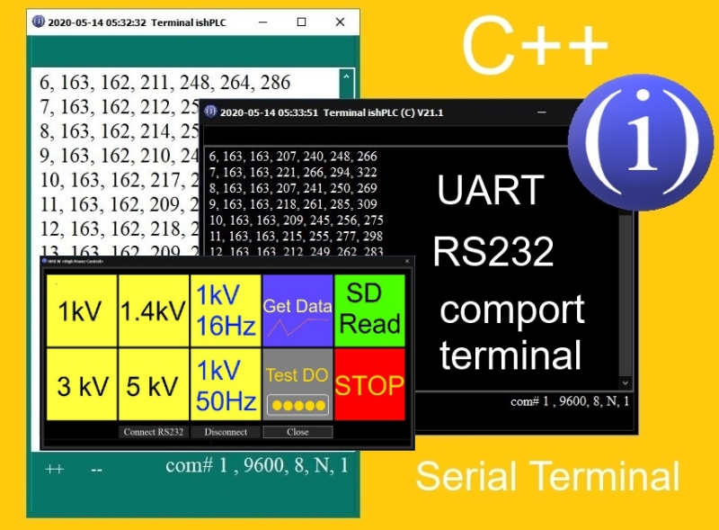
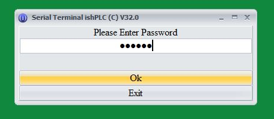

Serial Terminal ishPLC(C) 2020
"Serial Terminal V.32 Pro. & HMI for PLC"

"Password Panel"

"Connection is OK"

The App "Serial Terminal & HMI PLC" is App for manage DO's (digital outputs) PLC.
The App "Serial Terminal & HMI PLC" was made using C++. This is a standard HMI principle: PC and PLC communicate using serial protocol. By pressing a button on the HMI panel, the command is sent from the HMI to the PLC. The controller receives data and, depending on the logic, performs actions. In addition, the data received from the analog inputs of the PLC is transferred to the HMI and stored in the PC on the HDD as log file, and this data is also duplicated from the record on the SD card in the PLC as log file (<= 2 Gb). The App was made using C++. Logic of works: 1. Connect to USB PC -> USB\RS232 native adaptor to PLC Arduino. 2. Start App "Serial Terminal & HMI". 3. Password. 4. In Main Window choose the basic setts: com port number (1 ... or any connected com port) , BaudRate (9600 for Arduino), ByteSize (8), Parity (None), StopBit (1), Autosaving to Log - file (*.csv format); COM#,9600,8,N,1. 5. Press Connect Serial button, and siignal if all is Ok: message at Terminal: waiting... (PLC waits for commands). As Example, when we press 1kV Button, Terminal sends to Serial Port command: "cmd1". The PLC reads string and using "if" condition, opens DO#1, which give NC contact for start High Voltage Generator : 1 kv DC.
In Arduino PLC, you must use the port setting:
void setup () {
Serial.begin(9600); // Serial (9600, 8, N, 1)
//..... code ....
List of commands: "cmd1"..."data" and "test"
command: cmd1 = switch Relay "1kV"DCcommand: cmd2 = switch Relay "1.4kV"DC
command: cmd3 = switch Relay "3kV"DC
command: cmd4 = switch Relay "5kV"DC
command: cmd5 = switch Relay "1kV/16Hz"AC
command: cmd6 = switch Relay "1kV/50Hz"AC
command: test = switch DO 0,1,2,3,4,5 and stop.
command: data = reads data on AI 0,1,2,3,4,5 at this moment.
* Possible to use more other commands.
* Possible to save data logging to SD Card (<= 2 Gb for Arduino)
* Possible to manage PLC DO's without Serial, using keyboard connected to PLC. At this case not necessary PC, just keyboard connected to PLC.
"Autosave log.csv" Dark Style

"HMI W Panel" with big buttond

"Chart" PLC AI data